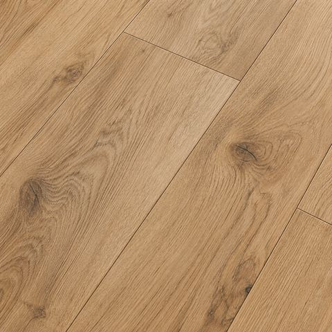
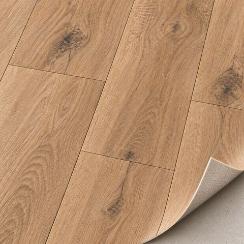
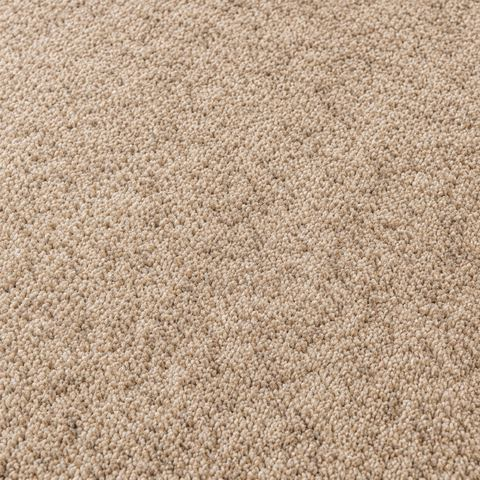
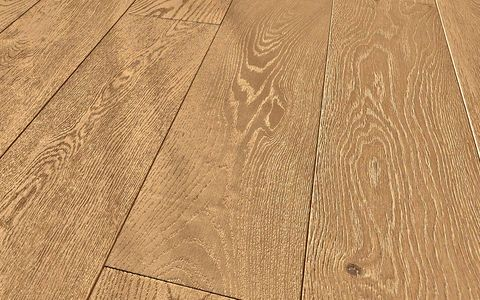
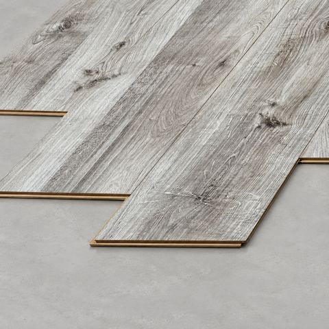
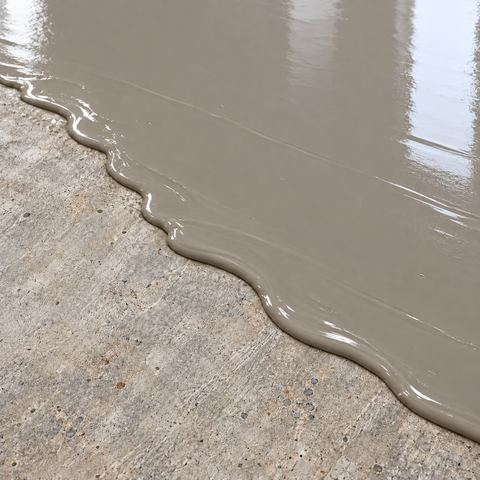
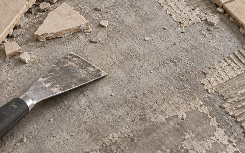
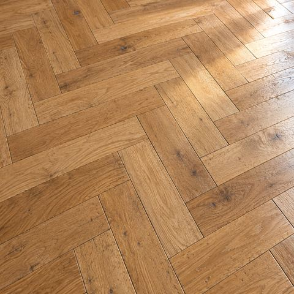

Vinylové
podlahy
Snadná údržba a široký výběr dekorů, které napodobují dřevo, kámen nebo dlažbu.
Rodinná tradice s láskou k podlahám
Stavíte nebo rekonstruujete? Podlahy nechte na nás. Probereme vaši představu, poradíme s výběrem a postaráme se o realizaci.

Pomůžeme vám s výběrem, zajistíme materiál, připravíme podklad a postaráme se o pokládku. Při výměně podlahy také odstraníme původní krytinu a zajistíme její likvidaci.

Snadná údržba a široký výběr dekorů, které napodobují dřevo, kámen nebo dlažbu.

Pružná krytina s jednoduchou údržbou a pestrým výběrem barev i vzorů.

Výběr barev, vzorů a výšky vlasu, se kterými můžete zútulnit svůj domov.

Přírodní materiál s osobitou kresbou, která dává každé místnosti vlastní charakter.

Praktická podlaha, která spojuje vzhled dřeva se snadnou údržbou.

Oprava a vyrovnání podkladu pro novou podlahu, včetně nivelace, pokud je potřeba.

Odstranění původní krytiny a zajištění likvidace při výměně podlahy.

Obnova stávajících parket po individuální domluvě.
Zavolejte nebo napište. Probereme vaši představu a rozsah prací. Domluvíme se, co od vás budeme potřebovat.
Obvykle se přijedeme podívat a prostor zaměříme. Cenovou nabídku můžeme připravit také podle rozměrů, které nám pošlete.
Domluvíme si termín pokládky a mezitím zajistíme materiál. V dohodnutém termínu pak přijedeme, připravíme podklad a položíme novou podlahu.
Po dokončení domluvených prací po sobě uklidíme a hotovou podlahu vám předáme.
Lepený vinyl ve světlém dubovém dekoru, položený na pečlivě vyrovnaný podklad.


Přírodní třívrstvé dřevo s pevným došlapem díky celoplošnému lepení.


Nivelační stěrku jsme sehnali přímo na místě, takže se materiál nemusel vozit z Česka.
/IMG-20251029-WA0004-1920.jpg)
/IMG-20251029-WA0014-1920.jpg)
/IMG-20251029-WA0013-1920.jpg)
/IMG-20251029-WA0009-1920.jpg)
/IMG-20251029-WA0016-1920.jpg)
/IMG-20251029-WA0003-1920.jpg)
Rovný a hladký podklad v novostavbě, připravený pro pokládku nové podlahy.


Odolné PVC pro kancelářské prostory s vyšší provozní zátěží.


Rekonstrukce podlahy ve známém Varna Clubu na Riegrově ulici, který se v té době proměňoval na R6 Club.


Jsme rodinná firma a podlahám se věnujeme už 30 let. Řemeslo se u nás předalo z otce na syna spolu se zkušenostmi získanými za roky společné práce.
Za Podlahářstvím Dragoun dnes stojí Milan Dragoun:
„Záleží mi na tom, abych svou práci odvedl pečlivě, dokončil ji v domluveném termínu a abyste vy byli s novou podlahou spokojení. Rád s vámi proberu vaši představu, poradím s výběrem a zodpovím vše, co vás bude zajímat.“
Cena závisí na vybraném materiálu, velikosti plochy a stavu podkladu. Každou zakázku proto naceníme individuálně podle toho, jaký rozsah prací bude potřeba.
Napište nám svou představu o nové podlaze. S měřením si nemusíte dělat starosti, přijedeme prostor zaměřit a podíváme se i na stav podkladu. Pokud už rozměry máte, můžete nám je poslat a připravíme nabídku podle nich.
Nejčastěji pracujeme v Olomouci a okolí, ale rádi za vámi dojedeme i dál, zhruba do 100 km od Olomouce. Určitě se nám ozvěte a domluvíme se.
Ano, probereme s vámi, kam podlahu vybíráte, jaké máte požadavky a co se vám líbí. Poradíme vám s výběrem materiálu i konkrétního provedení.
Máme k dispozici menší vzorky. Pro lepší představu o tom, jak bude podlaha vypadat na větší ploše, vám doporučíme návštěvu vzorkovny některého z našich dodavatelů.
Ano, při výměně podlahy odstraníme původní krytinu, zajistíme její likvidaci a připravíme podklad pro novou podlahu.
Zavolejte, napište nebo vyplňte formulář. Vaši představu i podrobnosti realizace probereme společně.